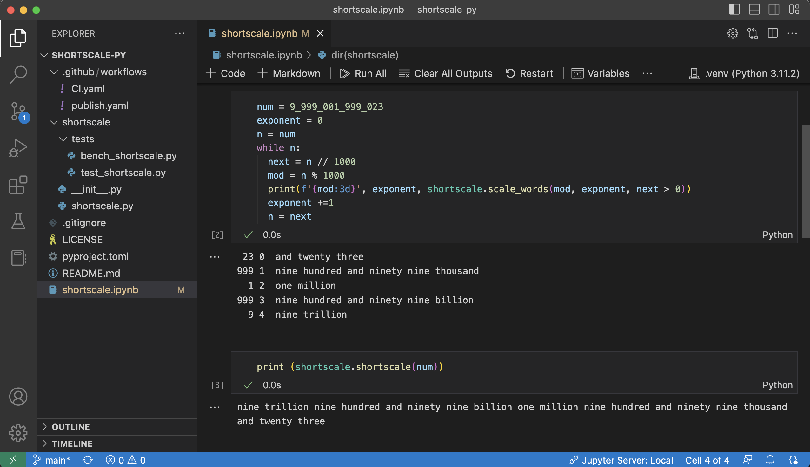
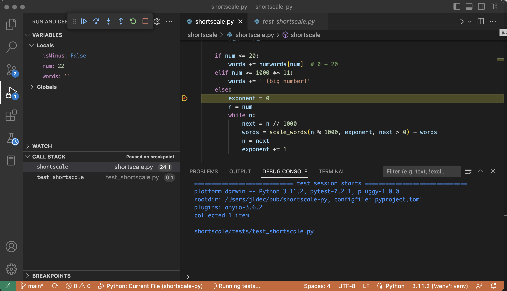
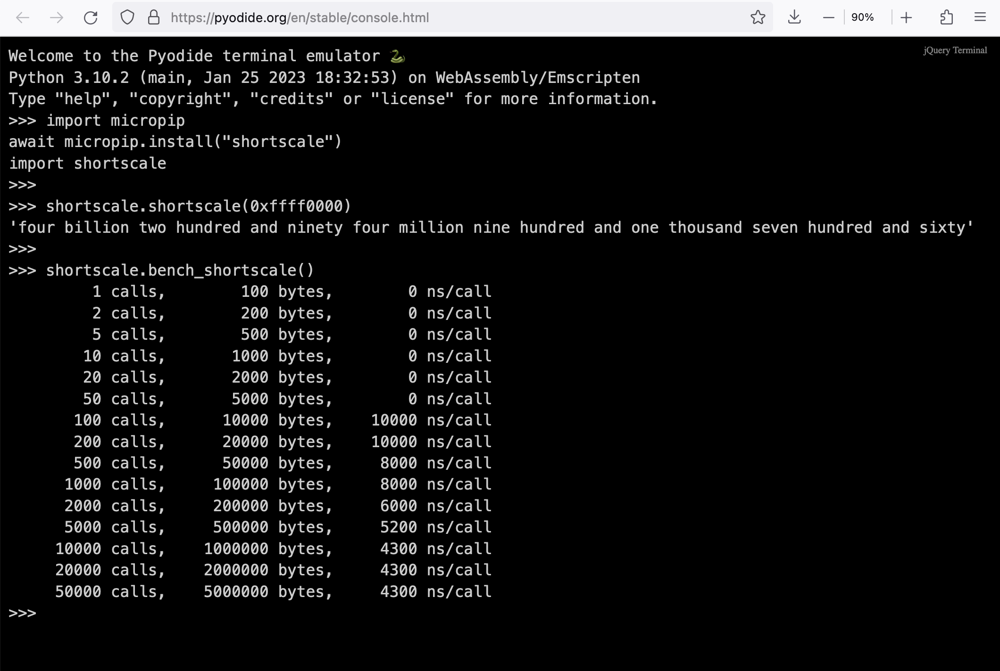
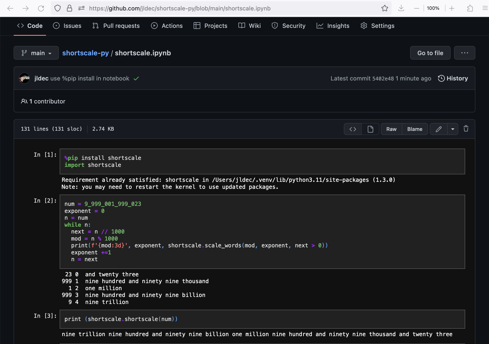
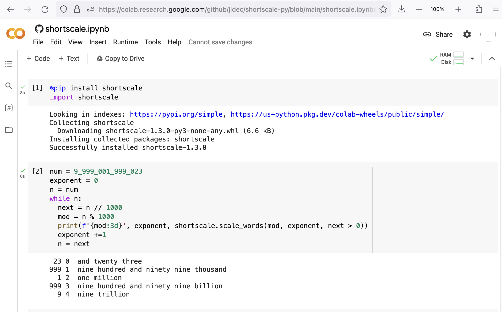

Let's do some Python
In preparation for using a lot more Python, I decided to refresh my Python knowedge and publish my first Python module at https://pypi.org/project/shortscale/.
Some readers may recognize shortscale from earlier explorations in JavaScript, Rust, and Go.
This post covers the following steps:
- Install Python on macOS
- Write the skeleton code, with just a one-line function.
- Build and publish the incomplete v0.1 module.
- Complete the logic v1.0.0.
- Benchmarks
- Python in the browser
- Jupyter notebooks
Install python v3.10 (the hard way)
Installing Python on macOS is easiest with the official installer or with homebrew.
I wanted a way to switch between Python versions, so I followed the instructions for pyenv.
NOTE: This does a full local build of CPython, and requires dependencies different from the macOS command line tools.
# 1. Install pyenv
# from https://github.com/pyenv/pyenv#set-up-your-shell-environment-for-pyenv
git clone https://github.com/pyenv/pyenv.git $HOME/.pyenv
export PYENV_ROOT="$HOME/.pyenv"
export PATH="$PYENV_ROOT/bin:$PATH"
eval "$(pyenv init --path)"
# 2. Fix dependencies for macOS
# from https://github.com/pyenv/pyenv/wiki#suggested-build-environment
brew install openssl readline sqlite3 xz zlib tcl-tk
# 3. After the brew install, fix LDFLAGS, CPPFLAGS and add tcl-tk/bin onto PATH
export LDFLAGS="$LDFLAGS -L$HOME/homebrew/opt/openssl@3/lib -L$HOME/homebrew/opt/readline/lib -L$HOME/homebrew/opt/sqlite/lib -L$HOME/homebrew/opt/zlib/lib -L$HOME/homebrew/opt/tcl-tk/lib -L$HOME/homebrew/opt/openssl@3/lib -L$HOME/homebrew/opt/readline/lib -L$HOME/homebrew/opt/sqlite/lib -L$HOME/homebrew/opt/zlib/lib -L$HOME/homebrew/opt/tcl-tk/lib"
export CPPFLAGS="$CPPFLAGS -I$HOME/homebrew/opt/openssl@3/include -I$HOME/homebrew/opt/readline/include -I$HOME/homebrew/opt/sqlite/include -I$HOME/homebrew/opt/zlib/include -I$HOME/homebrew/opt/tcl-tk/include -I$HOME/homebrew/opt/openssl@3/include -I$HOME/homebrew/opt/readline/include -I$HOME/homebrew/opt/sqlite/include -I$HOME/homebrew/opt/zlib/include -I$HOME/homebrew/opt/tcl-tk/include"
export PATH=$HOME/homebrew/opt/tcl-tk/bin:$PATH
# 4. Use pyenv to build and install python v3.10 and make it the global default
pyenv install 3.10
pyenv global 3.10
# Point to the installed version in .bash_profile (instead of depending on the pyenv shim)
export PATH=$HOME/.pyenv/versions/3.10.9/bin:$PATH
Virtual environments and pip
Python modules and their dependencies can be installed from pypi.org using pip install.
Configuring a virtual environment will isolate modules under a .venv directory, which is easy to clean up, rather than installing everything globally.
I created a venv under my home directory.
python3 -m venv ~/.venv
Instead of "activating" the venv, which changes the prompt, I prepended the .venv/bin directory onto my PATH.
export PATH=$HOME/.venv/bin:$PATH
Create a new module called shortscale
First I wrote a skeleton shortscale function which just returns a string with the input.
The rest of the code is boilerplate, to make the function callable on the command line. Passing base=0 to int() enables numeric literal input with different bases.
shortscale.py
"""English conversion from number to string"""
import sys
__version__ = "0.1.0"
def shortscale(num: int) -> str:
return '{} ({} bits)'.format(num, num.bit_length())
def main():
if len(sys.argv) < 2:
print ('Usage: shortscale num')
sys.exit(1)
print(shortscale(int(sys.argv[1],0)))
sys.exit(0)
if __name__ == '__main__':
main()
The output looks like this:
$ python shortscale.py 0x42
66 (7 bits)
Next, I built and published this incomplete v0.1 shortscale module.
Unlike the npm JavaScript ecosystem, you can't just use pip to publish a module to the pypi repository. There are different build tools to choose from.
I chose setuptools because it appears to be the recommended tool, and shows what it's doing. This meant installing build and twine.
Python packages are described in a pyproject.toml. Note that project.scripts points to the CLI entrypoint at main().
pyproject.toml
[project]
name = "shortscale"
description = "English conversion from number to string"
authors = [{name = "Jürgen Leschner", email = "jldec@users.noreply.github.com"}]
readme = "README.md"
license = {file = "LICENSE"}
classifiers = ["License :: OSI Approved :: MIT License"]
dynamic = ["version"]
[project.urls]
Home = "https://github.com/jldec/shortscale-py"
[project.scripts]
shortscale = "shortscale:main"
[build-system]
requires = ["setuptools>=61.0"]
build-backend = "setuptools.build_meta"
[tool.setuptools.dynamic]
version = {attr = "shortscale.__version__"}
Build the module
The build tool creates 2 module bundles (source and runnable code) in the ./dist directory.
$ python -m build
...
Successfully built shortscale-0.1.0.tar.gz and shortscale-0.1.0-py3-none-any.whl
Publish to pypi.org
$ python -m twine upload dist/*
Uploading distributions to https://upload.pypi.org/legacy/
Uploading shortscale-0.1.0-py3-none-any.whl
Uploading shortscale-0.1.0.tar.gz
...
View at:
https://pypi.org/project/shortscale/0.1.0/
Install and run in a venv
The moment of truth. Install the module in a new venv, and invoke it.
$ mkdir test
$ cd test
$ python -m venv .venv
$ source .venv/bin/activate
(.venv) $ pip install shortscale
...
Successfully installed shortscale-0.1.0
(.venv) $ shortscale 0xffffffffffff
281474976710655 (48 bits)
$ deactivate
Complete the logic
Python still amazes me with its terseness and readability.
The first iteration had 3 functions, of which the longest had 30 lines with generous spacing.
One of those functions decomposes a number into powers of 1000.
def powers_of_1000(n: int):
"""
Return list of (n, exponent) for each power of 1000.
List is ordered highest exponent first.
n = 0 - 999.
exponent = 0,1,2,3...
"""
p_list = []
exponent = 0
while n > 0:
p_list.insert(0, (n % 1000, exponent))
n = n // 1000
exponent += 1
return p_list
Playing aound in a Jupyter notebook, I was able to eliminate the extra function (and the list which it returns), simply by reversing the order of building the shortscale output.

Using a Jupyter environment in VS Code is a clear win. The result was simpler and faster.
Testing
There is nice support for Python testing and debugging in VS Code.
The function to run unit tests took just 3 lines.

Benchmarks
I was pleased with the benchmarks as well. For this string manipulation micro-benchmark, CPython 3.11 is only 1.5x slower than V8 JavaScript!
Compiled languages like Go and Rust will outperform that, but again, not by a huge amount.
The results below are from my personal M1 arm64 running macOS.
Python
Python v3.11.2
$ python tests/bench_shortscale.py
50000 calls, 5000000 bytes, 1264 ns/call
100000 calls, 10000000 bytes, 1216 ns/call
200000 calls, 20000000 bytes, 1216 ns/call
Python v3.10.9
$ python tests/bench_shortscale.py
50000 calls, 5000000 bytes, 1811 ns/call
100000 calls, 10000000 bytes, 1808 ns/call
200000 calls, 20000000 bytes, 1809 ns/call
Javascript
$ node test/bench.js
20000 calls, 2000000 bytes, 796 ns/call
20000 calls, 2000000 bytes, 790 ns/call
20000 calls, 2000000 bytes, 797 ns/call
Go
$ go test -bench . -benchmem
BenchmarkShortscale-8 4227788 252.0 ns/op 248 B/op 5 allocs/op
Rust
$ cargo bench
running 2 tests
test a_shortscale ... bench: 182 ns/iter (+/- 3)
test b_shortscale_string_writer_no_alloc ... bench: 63 ns/iter (+/- 2)
Let's run shortscale in the browser
Open your browser on https://pyodide.org/en/stable/console.html and paste the following python commands into the python REPL, line by line.
import micropip
await micropip.install("shortscale")
import shortscale
shortscale.shortscale(0xffff0000)
shortscale.bench_shortscale()

It looks like Python in WASM in the browser is only 2 to 3 times slower than native CPython. Amazing!
Jupyter notebooks on GitHub
GitHub shows the output of Jupyter notebook (.ipynb) files in your browser
https://github.com/jldec/shortscale-py/blob/main/shortscale.ipynb

Google Colaboratory
You can also open the notebook from GitHub in a Google Colaboratory environment
https://colab.research.google.com/github/jldec/shortscale-py/blob/main/shortscale.ipynb

Keep on learning
🚀
powered by pub-server and pub-theme-pubblog